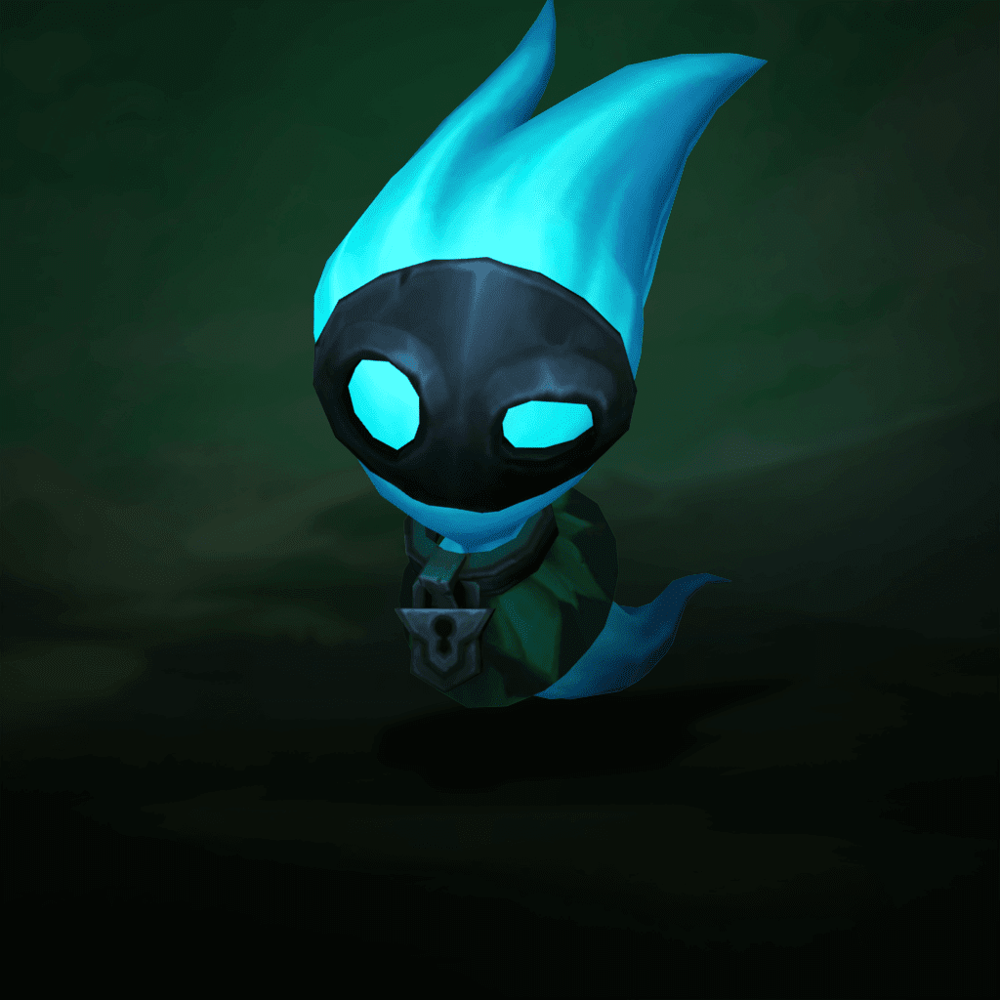
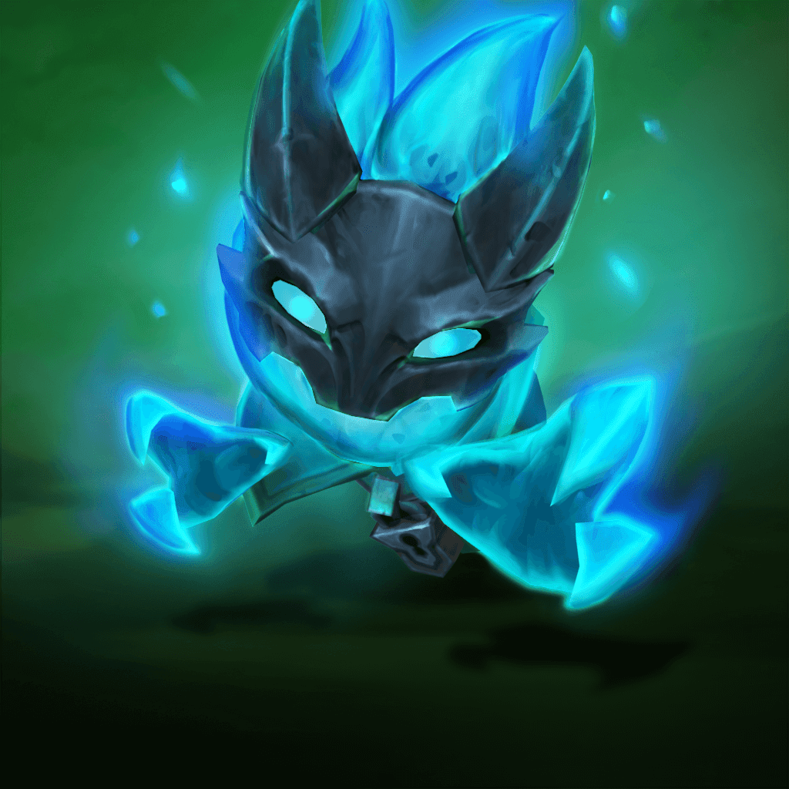
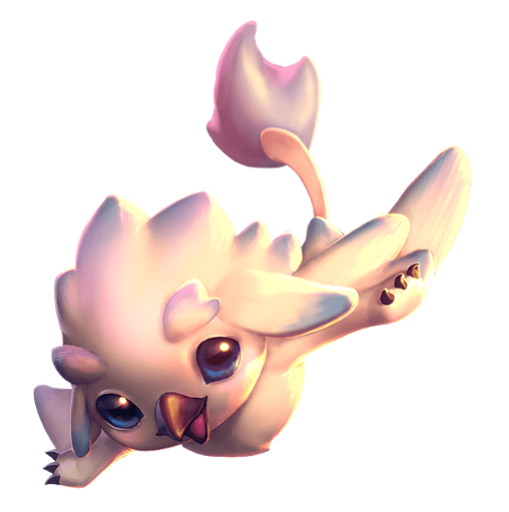

5. széria
5. széria
 2. széria
2. széria1. széria
Ezek az első szériás kis legendák
Dühszarv
A dühszarvak oroszlánszerű négy lábon járó emlősök, mely apró teremtményeknek vastag bundája és hatalmas hátra lekonyuló szarva van, ami környezetük hatására változik.
Kinézetek
Kísértet
Az élőholtak utálatos lények, leginkább a Sötét Szigeteken húzódnak meg, de befolyásuk elért Valoran partjaira az elmúlt évtizedekben.
Kinézetek
|  |  |
Ezüstszárnyú
Ezek a griff-szerű lények Demacia északi szirtjein honos ragadozók, akik szeretnek magányos farmerekre, de esetenként felfegyverzett katonákra is rátámadni.